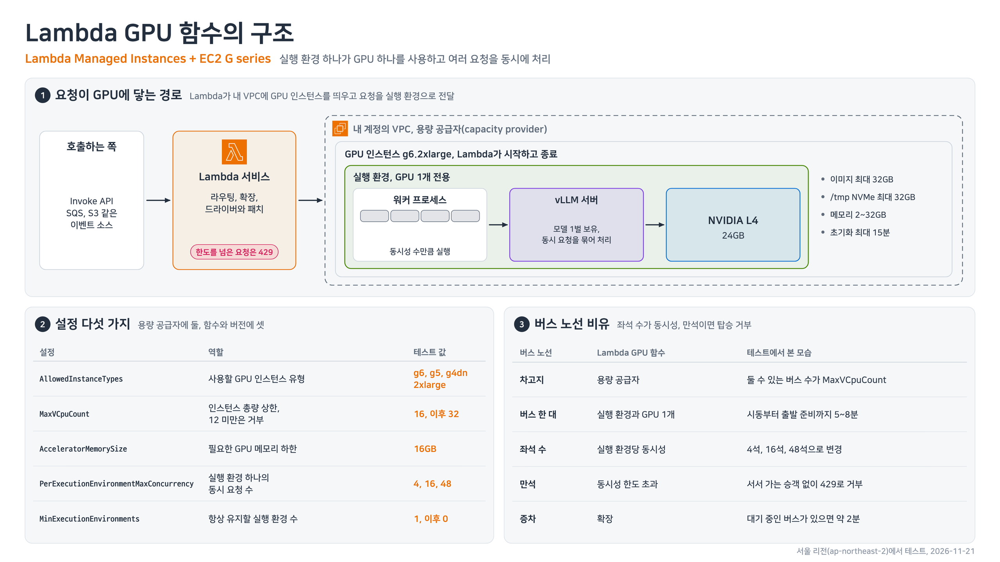
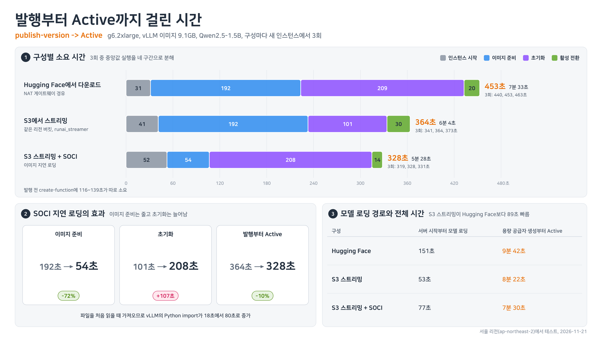
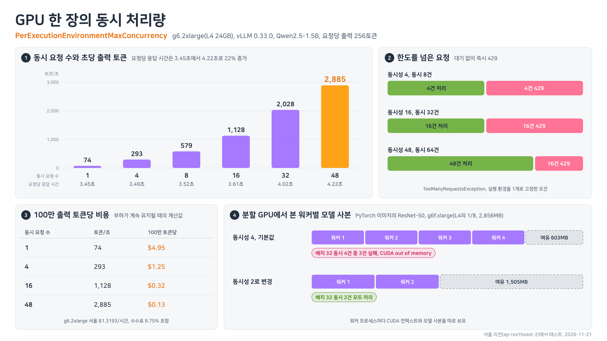
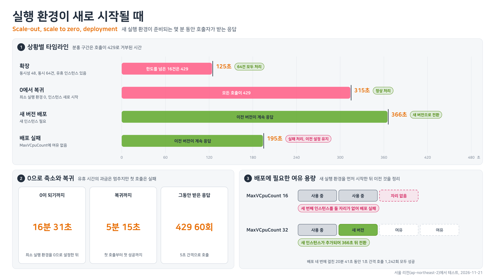
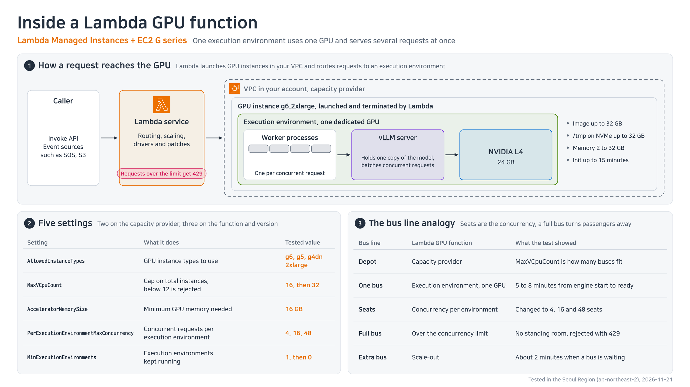
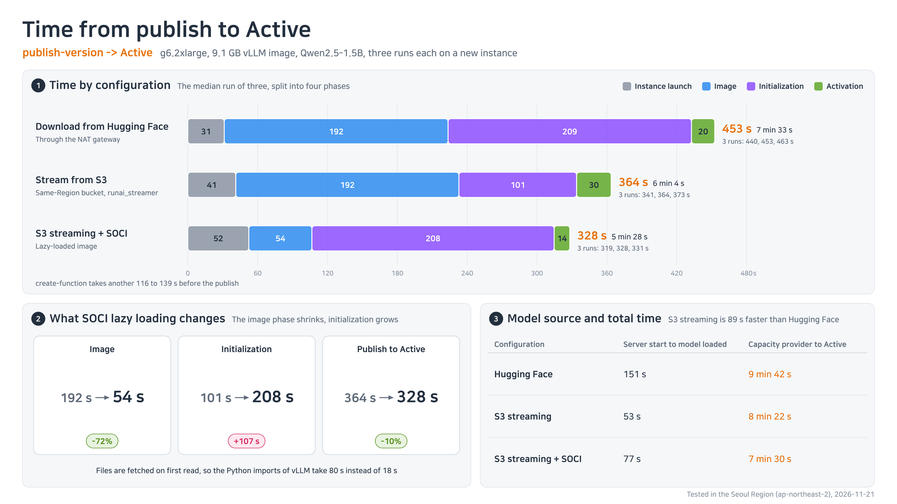
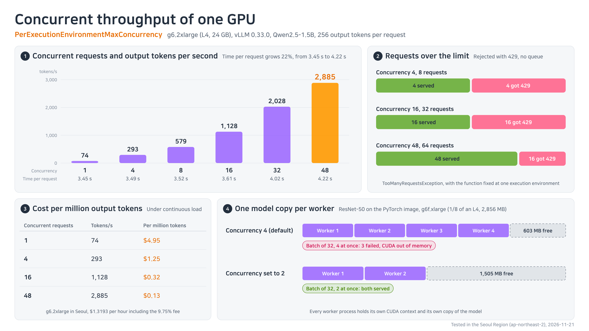
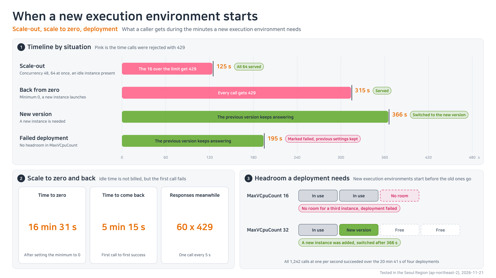

AWS Lambda가 2026년 11월 18일에 출시한 GPU 함수를 서울 리전에 직접 배포해 시작 시간, 동시 처리량, 확장과 배포 중의 동작을 테스트해 보았습니다. vLLM 함수는 버전 발행부터 Active까지 구성에 따라 5분 28초에서 7분 33초가 걸렸고 동시성을 48로 올리자 L4 GPU 한 장이 초당 2,885토큰을 처리했습니다. 하지만 SOCI는 이미지 준비 시간을 72% 줄이는 대신 초기화 시간을 늘려 전체로는 10% 단축에 그쳤고 기본 핸들러는 토큰 스트리밍을 지원하지 않았습니다.I deployed the GPU functions AWS Lambda launched on November 18, 2026 in the Seoul Region and tested start-up time, concurrent throughput, and what happens during scaling and deployment. A vLLM function took 5 min 28 s to 7 min 33 s from publish to Active depending on the configuration, and with the concurrency set to 48 one L4 GPU served 2,885 tokens per second. But SOCI cut the image phase by 72% while lengthening initialization, so the total shrank by only 10%, and the default handler did not support token streaming.
AWS Lambda가 2026년 11월 18일에 출시한 GPU 함수를 서울 리전(ap-northeast-2)에 배포해 테스트했습니다. vLLM 컨테이너와 Qwen2.5-1.5B 모델을 올린 함수는 버전을 발행한 뒤 5분 28초 만에 호출 가능한 상태가 됐습니다. 같은 함수의 동시성을 48로 올리자 NVIDIA L4 GPU 한 장이 초당 2,885개의 출력 토큰을 처리했습니다.
테스트 전에 확인하려던 항목은 여섯 가지입니다. 발표문과 출시 블로그가 제시한 수치가 서울 리전에서 재현되는지, 문서만으로는 알 수 없는 동작이 무엇인지를 보려고 했습니다. 같은 날 문서 기준으로 정리한 AWS에서 vLLM을 실행하는 플랫폼 여섯 가지와 선택 기준에서 확인하지 못하고 남겨 둔 서울 리전 지원과 응답 스트리밍도 여기에 포함했습니다.
| 확인할 항목 | 발표와 문서의 설명 | 테스트 결과 |
|---|---|---|
| 서울 리전 동작 여부 | Lambda Managed Instances와 G 계열 인스턴스가 모두 있는 리전에서 제공 | 동작함. g6.2xlarge와 g6f.xlarge에서 확인 |
| 코드에서 실행까지 걸리는 시간 | 출시 블로그의 예시는 약 10분 | 용량 공급자 생성부터 7분 30초에서 9분 42초 |
| SOCI 지연 로딩의 효과 | 실행 환경 시작 시간을 최대 70% 단축 | 이미지 준비 구간은 72% 감소, 발행부터 Active까지는 10% 감소 |
| 동시 요청 처리 | 동시 4건이 1건과 비슷한 시간에 완료 | 1건 3.45초, 4건 3.49초, 48건 4.22초 |
| 0에서 복귀하는 시간 | 일반적으로 수 분, 그동안 429로 거부 | 첫 호출부터 5분 15초. 그동안 5초 간격 호출 60회가 모두 429 |
| 토큰 스트리밍 | 문서에 예제 없음 | 기본 핸들러는 지원하지 않음. "stream": true는 오류 |
표 1. 테스트 전에 세운 확인 항목과 결과. 2026년 11월 21일 서울 리전 기준
01
Lambda GPU 함수는 Lambda Managed Instances 위에서 실행됩니다. Lambda Managed Instances는 함수를 내 계정의 EC2 인스턴스에서 실행하되 인스턴스의 시작, 패치, 확장, 요청 라우팅을 Lambda가 맡는 방식입니다. 이번 출시로 여기에 EC2 G 계열 GPU 인스턴스를 사용할 수 있게 됐습니다.
구성 요소는 네 가지입니다. 용량 공급자(capacity provider)는 어떤 인스턴스 유형을 몇 vCPU까지 사용할지 정하는 리소스입니다. 함수의 버전을 발행하면 Lambda가 용량 공급자의 서브넷에 GPU 인스턴스를 시작합니다. 인스턴스 안에서는 GPU 하나를 전용으로 사용하는 실행 환경(execution environment)이 시작되고 실행 환경 하나가 여러 요청을 동시에 처리합니다.

버스 노선에 비유하면 이해하기 쉽습니다. 용량 공급자는 차고지이고 MaxVCpuCount는 차고지에 둘 수 있는 버스 수입니다. 실행 환경은 노선을 달리는 버스 한 대이고 동시성(PerExecutionEnvironmentMaxConcurrency)은 그 버스의 좌석 수입니다. 좌석이 4개인 버스는 다섯 번째 승객을 태우지 않습니다. 이것이 429 오류입니다. 승객이 계속 넘치면 차고지에서 버스를 한 대 더 내보내며 새 버스는 시동을 걸고 출발 준비를 마칠 때까지 몇 분이 걸립니다.
비유가 실제와 다른 점이 두 가지 있습니다. 버스는 좌석을 늘려도 속도가 같지만 GPU는 동시 요청이 48건이 되면 요청 하나의 응답 시간이 22% 늘어납니다. 버스 정류장에는 줄을 설 수 있지만 Lambda는 한도를 넘은 요청을 기다리게 하지 않고 바로 거부합니다.
02
테스트는 2026년 11월 21일 서울 리전의 한 계정에서 진행했습니다. 용량 공급자는 NAT 게이트웨이가 있는 기존 VPC의 프라이빗 서브넷 두 곳에 두었고 인바운드 규칙이 없는 보안 그룹을 연결했습니다.
| 항목 | 값 |
|---|---|
| 리전과 가용 영역 | ap-northeast-2, 가용 영역 2개(apne2-az1, apne2-az3) |
| 허용 인스턴스 유형 | vLLM 함수는 g6.2xlarge, g5.2xlarge, g4dn.2xlarge. 분할 GPU 함수는 g6f.large, g6f.xlarge |
| 선택된 인스턴스 | vLLM 함수는 13회 모두 g6.2xlarge(L4 24GB), 분할 GPU 함수는 g6f.xlarge(L4의 1/8) |
| 컨테이너 이미지 | vllm:cuda-v1과 vllm:cuda-v1-soci(압축 9.1GB, vLLM 0.33.0), pytorch:cuda-v1에 핸들러를 더한 이미지(압축 5.2GB) |
| 모델 | Qwen/Qwen2.5-1.5B-Instruct(가중치 2.9GiB), ResNet-50 |
| vLLM 함수 설정 | 메모리 16,384MB, vCPU 4개(메모리 대 vCPU 4:1), /tmp 32,768MB, GPU 메모리 요청 16GB, 제한 시간 900초 |
| 호출 도구 | boto3 1.44.9. SDK 재시도는 비활성화 |
| 부하 조건 | 요청당 max_tokens 256, temperature 0. 동시 N건을 같은 순간에 보내는 방식으로 3회 반복 |
표 2. 테스트 환경. 압축 크기는 Amazon ECR에 올라간 이미지 레이어의 합
시작 시간은 세 가지 구성으로 비교했습니다. 첫째는 모델을 Hugging Face Hub에서 내려받는 구성, 둘째는 같은 리전의 S3 버킷에서 스트리밍하는 구성, 셋째는 여기에 SOCI 지연 로딩을 더한 구성입니다. 구성마다 3회씩 테스트했고 매번 용량 공급자를 새로 만들어 이미지 캐시가 없는 새 인스턴스에서 시작하게 했습니다.
테스트 전체에서 GPU 인스턴스는 g6.2xlarge 13대와 g6f.xlarge 3대가 합계 272분 실행됐습니다. 서울 리전 가격과 수수료율로 계산한 GPU 인스턴스 비용은 약 5.34 USD입니다.
아래 코드는 셋째 구성을 만들 때 실행한 호출입니다. 이름과 계정 ID만 예시 값으로 바꿨습니다. 설치돼 있던 AWS CLI 2.38.5에는 --accelerator-config 옵션이 없어서 최신 boto3로 호출했습니다.
import json
import boto3
lam = boto3.client("lambda", region_name="ap-northeast-2")
# 1. 용량 공급자: 사용할 GPU 인스턴스 유형과 vCPU 상한
lam.create_capacity_provider(
CapacityProviderName="gpu-cp",
VpcConfig={"SubnetIds": ["subnet-aaaa", "subnet-bbbb"], "SecurityGroupIds": ["sg-aaaa"]},
PermissionsConfig={"CapacityProviderOperatorRoleArn": "arn:aws:iam::111122223333:role/gpu-operator-role"},
InstanceRequirements={"Architectures": ["x86_64"],
"AllowedInstanceTypes": ["g6.2xlarge", "g5.2xlarge", "g4dn.2xlarge"]},
CapacityProviderScalingConfig={"ScalingMode": "Auto", "MaxVCpuCount": 16},
)
# 2. 함수: vLLM 베이스 이미지, 모델은 같은 리전의 S3에서 스트리밍
lam.create_function(
FunctionName="gpu-vllm", PackageType="Image",
Code={"ImageUri": "111122223333.dkr.ecr.ap-northeast-2.amazonaws.com/gpu/vllm:cuda-v1-soci"},
Role="arn:aws:iam::111122223333:role/gpu-exec-role", Architectures=["x86_64"],
MemorySize=16384, Timeout=900, EphemeralStorage={"Size": 32768},
Environment={"Variables": {"MODEL_ID": "s3://amzn-s3-demo-bucket/models/Qwen2.5-1.5B-Instruct/",
"VLLM_LOAD_FORMAT": "runai_streamer"}},
CapacityProviderConfig={"LambdaManagedInstancesCapacityProviderConfig": {
"CapacityProviderArn": "arn:aws:lambda:ap-northeast-2:111122223333:capacity-provider:gpu-cp",
"ExecutionEnvironmentMemoryGiBPerVCpu": 4.0,
"PerExecutionEnvironmentMaxConcurrency": 4}},
AcceleratorConfig={"AcceleratorMemorySize": 16},
)
# 3. $LATEST가 ActiveNonInvocable 상태가 된 뒤 버전을 발행하면 GPU 인스턴스가 시작됨
lam.publish_version(FunctionName="gpu-vllm", PublishTo="LATEST_PUBLISHED")
# 4. 발행한 버전이 Active가 되면 호출
resp = lam.invoke(
FunctionName="gpu-vllm", Qualifier="$LATEST.PUBLISHED",
Payload=json.dumps({"messages": [{"role": "user", "content": "Explain serverless GPU inference in one sentence."}],
"max_tokens": 128}),
)
print(json.loads(resp["Payload"].read())["choices"][0]["message"]["content"])03
버전을 발행한 시점부터 버전 상태가 Active가 될 때까지의 중앙값은 구성에 따라 328초에서 453초였습니다. 가장 빠른 구성은 S3 스트리밍에 SOCI를 더한 구성이고 가장 느린 구성은 Hugging Face에서 모델을 내려받는 구성입니다.

| 구성 | 1회 | 2회 | 3회 | 중앙값 | 용량 공급자 생성부터 Active까지 |
|---|---|---|---|---|---|
| Hugging Face에서 다운로드 | 440초 | 463초 | 453초 | 453초 | 582초(9분 42초) |
| S3에서 스트리밍 | 373초 | 341초 | 364초 | 364초 | 502초(8분 22초) |
| S3 스트리밍과 SOCI | 319초 | 328초 | 331초 | 328초 | 450초(7분 30초) |
표 3. 발행부터 Active까지 걸린 시간. 마지막 열은 함수 생성 단계(116초에서 139초)를 포함한 중앙값
출시 블로그는 Hugging Face 모델 ID에서 호출 가능한 엔드포인트까지 약 10분이 걸렸다고 소개합니다. 서울 리전에서 같은 구성으로 테스트한 값은 9분 42초로 이와 비슷합니다. 이 가운데 약 2분은 버전 발행 전에 create-function이 9.1GB 이미지를 준비하는 시간입니다.
SOCI를 사용하지 않은 두 구성에서는 인스턴스가 시작된 뒤 함수의 첫 로그가 나오기까지 190초에서 196초가 걸렸습니다. 이 구간에는 인스턴스 부팅과 이미지를 받아서 푸는 시간이 들어 있습니다. vLLM 베이스 이미지는 레이어 30개 가운데 하나가 6.3GB여서, 이 레이어를 다 받아야 풀기를 시작합니다.
vLLM 서버가 시작된 뒤 모델 로딩이 끝날 때까지의 시간은 Hugging Face 구성이 151초, S3 스트리밍 구성이 53초였습니다. Hugging Face 구성은 NAT 게이트웨이를 거쳐 파일을 /tmp에 내려받은 뒤 읽고 S3 구성은 Run:ai Model Streamer가 가중치를 GPU 메모리로 바로 읽습니다. 전체로는 89초 차이입니다.
SOCI를 적용하면 이미지 준비 구간이 192초에서 54초로 줄어듭니다. 하지만 초기화 구간은 101초에서 208초로 늘었습니다. SOCI는 이미지를 미리 받지 않고 함수가 파일을 처음 읽을 때 가져오기 때문입니다. vLLM이 Python 모듈을 불러오는 시간이 18초에서 80초로 늘었고 모델 로딩과 컴파일 단계도 각각 20초 이상 길어졌습니다. 그 결과 발행부터 Active까지는 364초에서 328초로 10% 줄었습니다.
세 구성 모두 Active가 된 직후의 첫 호출은 0.73초에서 0.76초, 이후 호출은 0.47초에서 0.49초에 응답했습니다. 모델 로딩이 발행 단계에서 끝나므로 첫 호출이 콜드 스타트를 겪지 않고 SOCI 구성도 첫 호출이 느려지지 않았습니다.
04
실행 환경 하나의 동시성을 4, 16, 48로 바꿔 가며 같은 프롬프트를 동시에 보냈습니다. 동시 요청이 1건일 때 초당 74토큰이던 처리량은 48건에서 2,885토큰으로 39배가 됐고 요청 하나의 응답 시간은 3.45초에서 4.22초로 22% 늘었습니다.

출시 블로그는 동시 4건이 1건과 비슷한 시간에 끝난다고 설명했고 테스트에서도 1건 3.45초, 4건 3.49초로 같았습니다. vLLM 이미지는 실행 환경마다 추론 서버 하나가 모델을 보유하고 워커 프로세스는 요청을 서버에 전달하기만 합니다. 서버가 동시에 들어온 요청을 묶어서 처리하므로 동시성을 올려도 GPU 메모리 사용량은 18.7GB로 같았습니다.
실행 환경을 1개로 고정하고 한도보다 많은 요청을 보내면 넘는 만큼 정확히 거부됐습니다. 동시성 4에서 8건을 보내면 4건, 동시성 48에서 64건을 보내면 16건이 TooManyRequestsException(HTTP 429)을 받았습니다. 거부된 요청은 0.08초 안에 오류를 받았고 처리된 요청의 응답 시간에는 영향이 없었습니다.
Lambda GPU 함수는 호출 시간이 아니라 인스턴스가 실행 중인 시간에 과금됩니다. g6.2xlarge의 서울 리전 요금은 관리 수수료 9.75%를 포함해 시간당 1.3193 USD입니다. 부하가 끊기지 않는다고 가정하면 100만 출력 토큰당 비용은 동시 1건에서 4.95 USD, 48건에서 0.13 USD로 추정됩니다. 같은 인스턴스에서 39배 차이입니다.
동시 4건 부하를 4분간 유지하는 동안 CloudWatch의 GPUUtilization은 100%였습니다. 같은 GPU가 동시 48건에서 처리량을 10배로 늘렸으므로, 이 지표가 100%라고 해서 여력이 없는 것은 아닙니다. 문서에 따르면 이 지표는 GPU가 얼마나 많이 사용됐는지가 아니라 GPU가 작업 중이던 시간의 비율입니다.
이 점은 확장 설정과 연결됩니다. Lambda는 GPU 사용률, CPU 사용률, 동시성 가운데 하나라도 목표를 넘으면 실행 환경을 늘리고 GPU 사용률의 기본 목표는 40%입니다. 테스트에서는 동시 4건 부하 직후 최대 실행 환경 수를 1에서 2로 올리자 약 25초 뒤에 두 번째 인스턴스가 시작됐습니다. 이때 GPU 사용률과 동시성이 모두 목표를 넘은 상태였습니다.
05
작은 모델은 분할 GPU 인스턴스에서 실행했습니다. PyTorch 베이스 이미지에 ResNet-50을 올린 함수를 GPU 메모리 3GB로 요청하자 g6f.xlarge가 선택됐습니다. 서울 리전 요금은 수수료를 포함해 시간당 0.3205 USD이고 발행부터 Active까지는 218초였습니다.
함수 안에서 드라이버가 보고한 장치 이름은 NVIDIA L4-3Q, 전체 메모리는 2,856MB였습니다. 배치 8개를 추론하는 시간은 GPU에서 67밀리초에서 152밀리초, 같은 실행 환경의 CPU에서 800밀리초였습니다.
동시성을 지정하지 않으면 기본값 4가 적용되어 워커 프로세스 4개가 시작됩니다. PyTorch 이미지에서는 워커마다 핸들러를 불러오므로 모델도 워커마다 한 벌씩 GPU에 올라갑니다. 워커 4개가 모두 초기화된 뒤 남은 GPU 메모리는 603MB였고 배치 32개 요청을 4건 동시에 보내자 3건이 CUDA out of memory로 실패했습니다.
동시성을 2로 낮춰 다시 발행하자 남은 메모리는 1,505MB가 됐고 배치 32개 요청 2건이 모두 처리됐습니다. 재배포에는 213초가 걸렸습니다. vLLM 이미지와 달리 직접 작성한 핸들러는 동시성을 올리면 GPU 메모리 사용량이 함께 늘어납니다. 그래서 문서는 ExecutionEnvironmentGPUMemoryUsed 지표를 보면서 동시성을 조정하라고 권고합니다.
06
운영 중에는 실행 환경이 새로 시작되는 경우가 세 가지 있습니다. 부하가 늘어 확장할 때, 0으로 축소된 뒤 다시 호출될 때, 새 버전을 배포할 때입니다. 세 경우 모두 새 실행 환경이 준비되는 데 분 단위 시간이 걸리며 그동안 호출자가 받는 응답은 경우마다 달랐습니다.

| 상황 | 조건 | 걸린 시간 | 호출자가 받은 응답 |
|---|---|---|---|
| 확장 | 동시성 48, 동시 64건 부하, 유휴 인스턴스 있음 | 125초 뒤 두 번째 실행 환경이 요청 처리 시작 | 그동안 48건은 처리, 넘는 16건은 429. 이후 64건 모두 처리 |
| 0으로 축소 | 최소 실행 환경 0, 호출 없음 | 설정 16분 31초 뒤 인스턴스 종료 시작 | 호출하지 않음. 버전 상태는 Active 유지 |
| 0에서 복귀 | 실행 환경과 인스턴스가 없는 상태에서 호출 | 첫 호출부터 5분 15초 뒤 첫 성공 | 5초 간격 호출 60회가 모두 429. 이후 0.72초에 응답 |
| 새 버전 배포 | 동시성 변경 후 재발행, 유휴 GPU 있음 | 161초 | 1초 간격 호출 1,242회가 모두 성공 |
| 새 버전 배포 | 동시성 변경 후 재발행, 새 인스턴스 필요 | 366초 | 배포 중 호출하지 않음 |
| 배포 실패 | MaxVCpuCount 16, 인스턴스 2대 사용 중 | 195초 뒤 실패 처리 | 이전 버전이 계속 응답. 오류 없음 |
표 4. 실행 환경이 새로 시작되는 상황별 시간과 호출자가 받은 응답
동시성 48인 함수에 동시 64건 부하를 8분간 유지했습니다. 처음 125초 동안은 48건만 처리되고 넘는 요청은 429를 받았습니다. 그 뒤 두 번째 실행 환경이 요청을 받기 시작하면서 429가 사라졌고 처리량은 초당 2,949토큰에서 3,953토큰으로 늘었습니다. 이때 용량 공급자에는 이미지를 받아 둔 유휴 인스턴스가 있었습니다. 인스턴스부터 새로 시작해야 하면 앞에서 테스트한 시작 시간만큼 더 걸립니다.
최소 실행 환경을 0으로 바꾸고 호출을 멈추자 16분 31초 뒤에 인스턴스 3대가 모두 종료 절차에 들어갔습니다. 마지막 호출로부터는 약 17분 뒤입니다. 그동안 버전 상태는 Active로 유지됐습니다. 종료가 시작되고 30초 뒤에 함수를 다시 호출하자 첫 호출은 429를 받았고 8초 뒤 새 인스턴스가 시작됐습니다.
5초 간격으로 계속 호출한 60회는 모두 429를 받았고 첫 성공은 5분 15초 뒤였습니다. 오류 메시지는 함수가 0으로 축소되어 새 실행 환경을 시작하는 중이니 지수 백오프로 재시도하라는 내용입니다. 인스턴스가 없는 상태에서 시작하므로 걸린 시간은 발행부터 Active까지의 시간과 비슷합니다.
동시성을 바꿔 다시 발행하는 동안 1초 간격으로 함수를 호출했습니다. 실패한 배포 세 번과 성공한 배포 한 번을 거친 20분 41초 동안 1,242회 호출이 모두 성공했고 가장 느린 응답은 0.29초였습니다. Lambda가 새 버전의 실행 환경을 먼저 시작한 뒤 이전 실행 환경을 정리하기 때문입니다.
첫 배포는 실패했습니다. 용량 공급자의 MaxVCpuCount가 16이어서 g6.2xlarge를 2대까지만 둘 수 있었는데 직전 부하로 실행 환경이 이미 2개였습니다. 새 버전을 올릴 세 번째 인스턴스를 시작할 수 없었고 배포는 195초 뒤 CapacityProviderScalingLimitExceeded로 실패했습니다. Lambda는 발행된 버전을 이전 설정으로 되돌렸고 호출은 계속 처리됐습니다.
MaxVCpuCount를 32로 올린 직후의 재발행도 같은 오류로 실패했습니다. 변경 0.2초 뒤와 77초 뒤에 발행한 두 번 모두 약 40초 만에 실패했습니다. 6분 50초 뒤의 발행은 성공했는데 이때는 유휴 GPU가 하나 있었습니다. 18분 뒤의 배포에서는 새 인스턴스가 정상적으로 추가됐습니다. 한도 변경이 언제부터 적용되는지는 이 테스트로 확정하지 못했습니다.
07
테스트 스크립트를 수정하게 만든 동작을 모았습니다. 대부분 오류 메시지만으로 원인을 알 수 있었지만 미리 알면 시간을 줄일 수 있는 항목입니다.
| 항목 | 관찰한 동작 | 대응 |
|---|---|---|
| 함수 상태 | 함수를 만들면 $LATEST는 Active가 아닌 ActiveNonInvocable 상태로 끝남 | 이 상태를 준비 완료로 판단하고 버전을 발행 |
MaxVCpuCount 최소값 | 8과 11은 below the recommended minimum 오류, 12는 통과 | 12 이상으로 설정 |
| 인스턴스 조회 | Lambda가 시작한 인스턴스는 DescribeInstances 기본 결과에 나타나지 않음 | IncludeManagedResources를 지정 |
| 토큰 스트리밍 | "stream": true를 넣으면 기본 핸들러가 JSONDecodeError로 실패. InvokeWithResponseStream은 호출되지만 응답이 끝에 한 번에 도착 | 기본 핸들러에서는 스트리밍 없이 사용 |
| 함수 URL | $LATEST.PUBLISHED는 함수 URL과 별칭의 대상으로 지정할 수 없음. 한정자 없는 URL은 502를 반환 | 번호 버전과 별칭이 필요. 이 경로는 테스트하지 않음 |
| 스케일링 설정 직후 발행 | PutFunctionScalingConfig 직후의 PublishVersion은 ResourceConflictException | 몇 초 간격으로 재시도 |
| 이미지 매니페스트 | 매니페스트 목록으로 감싼 단일 이미지는 CreateFunction이 거부. SOCI 인덱스는 통과 | 단일 이미지 매니페스트에 태그를 지정 |
| GPU 메모리 요청값 | 16GB를 요청한 vLLM 함수가 24GB GPU에서 18.7GB를 사용 | vLLM의 메모리 비율(기본 0.8)은 실제 GPU 크기 기준 |
표 5. 테스트 중 확인한 동작과 대응. 2026년 11월 21일 서울 리전, boto3 1.44.9 기준
인스턴스 조회는 비용 확인과 직접 관련됩니다. Lambda가 시작한 GPU 인스턴스는 내 계정에서 실행되고 과금되지만 기본 조회에서는 숨겨집니다. 아래처럼 조회하면 용량 공급자 ARN이 태그로 표시됩니다.
ec2 = boto3.client("ec2", region_name="ap-northeast-2")
resp = ec2.describe_instances(
IncludeManagedResources=True,
Filters=[{"Name": "operator.principal", "Values": ["scaler.lambda.amazonaws.com"]}],
)
for r in resp["Reservations"]:
for i in r["Instances"]:
tags = {t["Key"]: t["Value"] for t in i["Tags"]}
print(i["InstanceId"], i["InstanceType"], i["State"]["Name"], tags["aws:lambda:capacity-provider"])08
이 결과는 하루 동안 한 계정에서 얻은 값입니다. 다음 조건이 달라지면 수치도 달라집니다.
09
Lambda GPU 함수가 맞는 경우는 이벤트로 시작되는 GPU 작업과 요청이 꾸준히 들어오는 소형 모델 추론입니다. 드라이버, AMI, 노드 확장을 직접 관리하지 않고 SQS나 S3 이벤트에 GPU 작업을 연결하는 구성에 적합합니다. 반대로 토큰 스트리밍이 필요한 대화형 서비스와 0에서 바로 응답해야 하는 서비스는 이번 테스트 결과로는 맞지 않습니다.
| 설정 | 권고 | 근거가 된 결과 |
|---|---|---|
| 모델 위치 | 같은 리전의 S3에 두고 runai_streamer로 로딩 | 모델 로딩 구간 151초에서 53초 |
| SOCI | 적용하되 효과는 워크로드별로 테스트 | 이미지 준비 72% 감소, 전체는 10% 감소 |
| 동시성 | vLLM 이미지는 48까지 올려서 테스트. 직접 작성한 핸들러는 GPU 메모리를 보면서 조정 | 동시 48건에서 2,885토큰/초, 분할 GPU는 기본값 4에서 메모리 부족 |
| 최소 실행 환경 | 응답 지연에 민감하면 1 이상, 개발과 배치 작업은 0 | 0에서 복귀하는 5분 15초 동안 모든 호출이 429 |
| GPU 사용률 목표 | 요청을 묶어 처리하는 워크로드는 기본 40%보다 높게 설정하고 최대 실행 환경 수를 지정 | 동시 4건에서 지표가 100% |
MaxVCpuCount | 운영 중인 인스턴스 수에 배포용 1대분을 더한 값으로 설정 | 여유가 없으면 배포 실패 |
| 호출 측 재시도 | 429에 지수 백오프로 재시도 | 확장과 복귀 중에는 429가 분 단위로 이어짐 |
표 6. 테스트 결과에 근거한 설정 권고. 1.5B 모델과 g6.2xlarge 조건의 결과이므로 적용 전에 같은 방법으로 다시 테스트하는 것을 권고합니다
적용 전에 확인할 수치는 두 가지입니다. 첫째는 발행부터 Active까지의 시간으로, 확장과 0에서 복귀할 때 호출자가 기다리는 시간의 기준이 됩니다. 둘째는 목표 응답 시간 안에서 GPU 한 장이 처리하는 동시 요청 수이고 이 값이 토큰당 비용을 결정합니다. 두 수치 모두 모델 크기와 인스턴스 유형에 따라 달라지므로 운영할 모델로 직접 테스트하는 것을 권고합니다.
I deployed the GPU functions that AWS Lambda launched on November 18, 2026 in the Seoul Region (ap-northeast-2) and tested them. A function running the vLLM container with the Qwen2.5-1.5B model became invocable 5 min 28 s after I published a version. With the concurrency of the same function raised to 48, one NVIDIA L4 GPU served 2,885 output tokens per second.
I went in with six things to check. I wanted to see whether the figures in the announcement and the launch blog reproduce in Seoul, and what the documentation alone does not tell you. Two of them are the points I left open in Six AWS platforms for running vLLM and how to choose, a post I wrote from the documentation the same day: support in the Seoul Region and response streaming.
| What to check | What the announcement and the docs say | Test result |
|---|---|---|
| Does it work in Seoul | Available where both Lambda Managed Instances and G-series instances are available | It works. Confirmed on g6.2xlarge and g6f.xlarge |
| Time from code to a running function | About 10 minutes in the launch blog's example | 7 min 30 s to 9 min 42 s from creating the capacity provider |
| Effect of SOCI lazy loading | Cuts execution environment start-up time by up to 70% | The image phase fell 72%, publish to Active fell 10% |
| Concurrent requests | Four concurrent requests finish in about the time of one | 3.45 s for 1, 3.49 s for 4, 4.22 s for 48 |
| Time to come back from zero | Typically a few minutes, with 429 in the meantime | 5 min 15 s from the first call. All 60 calls at 5-second intervals got 429 in the meantime |
| Token streaming | No example in the docs | Not supported by the default handler. "stream": true is an error |
Table 1. What I set out to check and what the tests showed. Seoul Region, November 21, 2026
01
A Lambda GPU function runs on Lambda Managed Instances. With Lambda Managed Instances, a function runs on EC2 instances in your own account while Lambda launches, patches and scales the instances and routes the requests. This launch adds EC2 G-series GPU instances to it.
There are four parts. A capacity provider is the resource that says which instance types to use and up to how many vCPUs. When you publish a version of the function, Lambda launches GPU instances in the subnets of the capacity provider. On an instance, an execution environment starts with one GPU dedicated to it, and one execution environment serves several requests at the same time.

A bus line makes this easier to picture. The capacity provider is the depot, and MaxVCpuCount is how many buses the depot can hold. An execution environment is one bus on the route, and the concurrency (PerExecutionEnvironmentMaxConcurrency) is the number of seats on that bus. When a fifth passenger comes to a bus with four seats, the bus turns the passenger away, and that is the 429 error. If passengers keep overflowing, the depot sends out one more bus, and a new bus needs several minutes to start its engine and get ready to leave.
The analogy departs from the real thing in two ways. A bus runs at the same speed with more seats, but on the GPU the response time of one request grows 22% at 48 concurrent requests. And passengers can queue at a bus stop, but Lambda does not make a request over the limit wait. It rejects it at once.
02
I ran the tests on November 21, 2026 in one account in the Seoul Region. The capacity providers sat in two private subnets of an existing VPC with a NAT gateway, with a security group that has no inbound rule.
| Item | Value |
|---|---|
| Region and Availability Zones | ap-northeast-2, two Availability Zones (apne2-az1, apne2-az3) |
| Allowed instance types | g6.2xlarge, g5.2xlarge and g4dn.2xlarge for the vLLM function. g6f.large and g6f.xlarge for the fractional GPU function |
| Instances selected | g6.2xlarge (L4, 24 GB) all 13 times for the vLLM function, g6f.xlarge (1/8 of an L4) for the fractional GPU function |
| Container images | vllm:cuda-v1 and vllm:cuda-v1-soci (9.1 GB compressed, vLLM 0.33.0), and pytorch:cuda-v1 plus a handler (5.2 GB compressed) |
| Models | Qwen/Qwen2.5-1.5B-Instruct (2.9 GiB of weights), ResNet-50 |
| vLLM function settings | 16,384 MB of memory, 4 vCPUs (memory to vCPU 4:1), 32,768 MB of /tmp, 16 GB of GPU memory requested, 900 s timeout |
| Client | boto3 1.44.9, with SDK retries disabled |
| Load | max_tokens 256 and temperature 0 per request. N requests sent at the same instant, repeated three times |
Table 2. Test environment. The compressed size is the sum of the image layers stored in Amazon ECR
I compared start-up time across three configurations. The first downloads the model from the Hugging Face Hub, the second streams it from an S3 bucket in the same Region, and the third adds SOCI lazy loading to the second. Each configuration ran three times, and each run used a new capacity provider so that it started on a new instance with no image cache.
Across all the tests, 13 g6.2xlarge and 3 g6f.xlarge instances ran for 272 minutes in total. At the Seoul price plus the fee rate, the GPU instances cost about 5.34 USD.
The code below is the set of calls I ran for the third configuration. Only the names and the account ID are replaced with example values. The installed AWS CLI 2.38.5 had no --accelerator-config option, so I made the calls with the latest boto3.
import json
import boto3
lam = boto3.client("lambda", region_name="ap-northeast-2")
# 1. Capacity provider: the GPU instance types to use and the vCPU limit
lam.create_capacity_provider(
CapacityProviderName="gpu-cp",
VpcConfig={"SubnetIds": ["subnet-aaaa", "subnet-bbbb"], "SecurityGroupIds": ["sg-aaaa"]},
PermissionsConfig={"CapacityProviderOperatorRoleArn": "arn:aws:iam::111122223333:role/gpu-operator-role"},
InstanceRequirements={"Architectures": ["x86_64"],
"AllowedInstanceTypes": ["g6.2xlarge", "g5.2xlarge", "g4dn.2xlarge"]},
CapacityProviderScalingConfig={"ScalingMode": "Auto", "MaxVCpuCount": 16},
)
# 2. Function: the vLLM base image, the model streamed from S3 in the same Region
lam.create_function(
FunctionName="gpu-vllm", PackageType="Image",
Code={"ImageUri": "111122223333.dkr.ecr.ap-northeast-2.amazonaws.com/gpu/vllm:cuda-v1-soci"},
Role="arn:aws:iam::111122223333:role/gpu-exec-role", Architectures=["x86_64"],
MemorySize=16384, Timeout=900, EphemeralStorage={"Size": 32768},
Environment={"Variables": {"MODEL_ID": "s3://amzn-s3-demo-bucket/models/Qwen2.5-1.5B-Instruct/",
"VLLM_LOAD_FORMAT": "runai_streamer"}},
CapacityProviderConfig={"LambdaManagedInstancesCapacityProviderConfig": {
"CapacityProviderArn": "arn:aws:lambda:ap-northeast-2:111122223333:capacity-provider:gpu-cp",
"ExecutionEnvironmentMemoryGiBPerVCpu": 4.0,
"PerExecutionEnvironmentMaxConcurrency": 4}},
AcceleratorConfig={"AcceleratorMemorySize": 16},
)
# 3. Once $LATEST reaches ActiveNonInvocable, publishing a version launches the GPU instance
lam.publish_version(FunctionName="gpu-vllm", PublishTo="LATEST_PUBLISHED")
# 4. Invoke once the published version is Active
resp = lam.invoke(
FunctionName="gpu-vllm", Qualifier="$LATEST.PUBLISHED",
Payload=json.dumps({"messages": [{"role": "user", "content": "Explain serverless GPU inference in one sentence."}],
"max_tokens": 128}),
)
print(json.loads(resp["Payload"].read())["choices"][0]["message"]["content"])03
The median time from publishing a version to the version state Active ranged from 328 s to 453 s by configuration. The fastest was S3 streaming with SOCI, and the slowest was the download from Hugging Face.

| Configuration | Run 1 | Run 2 | Run 3 | Median | From creating the capacity provider to Active |
|---|---|---|---|---|---|
| Download from Hugging Face | 440 s | 463 s | 453 s | 453 s | 582 s (9 min 42 s) |
| Stream from S3 | 373 s | 341 s | 364 s | 364 s | 502 s (8 min 22 s) |
| S3 streaming and SOCI | 319 s | 328 s | 331 s | 328 s | 450 s (7 min 30 s) |
Table 3. Time from publish to Active. The last column is the median including the function creation step (116 s to 139 s)
The launch blog says it took about 10 minutes from a Hugging Face model ID to an invocable endpoint. The same configuration tested in Seoul took 9 min 42 s, which is close. About 2 minutes of that is create-function preparing the 9.1 GB image before the version is published.
In the two configurations without SOCI, 190 s to 196 s passed between the instance launch and the first log line of the function. This phase holds the instance boot and the pull and unpack of the image. One of the 30 layers of the vLLM base image is 6.3 GB, and unpacking it starts only after the whole layer has arrived.
From the start of the vLLM server to the end of the model load, the Hugging Face configuration took 151 s and the S3 streaming configuration took 53 s. The Hugging Face configuration downloads the files to /tmp through the NAT gateway and then reads them, while in the S3 configuration the Run:ai Model Streamer reads the weights straight into GPU memory. The difference in the total is 89 s.
With SOCI the image phase falls from 192 s to 54 s. But initialization grew from 101 s to 208 s. SOCI does not pull the image up front. It fetches a file when the function reads it for the first time. The time vLLM spends importing Python modules grew from 18 s to 80 s, and the model load and the compile steps each took over 20 s longer. As a result, publish to Active fell from 364 s to 328 s, a 10% reduction.
In all three configurations the first call right after Active answered in 0.73 s to 0.76 s, and later calls in 0.47 s to 0.49 s. The model load finishes during the publish, so the first call sees no cold start, and the first call was no slower with SOCI.
04
I set the concurrency of one execution environment to 4, 16 and 48 and sent the same prompt in parallel. Throughput went from 74 tokens per second at 1 concurrent request to 2,885 at 48, a factor of 39, while the response time of one request grew 22%, from 3.45 s to 4.22 s.

The launch blog says four concurrent requests finish in about the time of one, and the test agreed: 3.45 s for 1 and 3.49 s for 4. In the vLLM image, one inference server per execution environment holds the model, and the worker processes only forward requests to it. The server batches the requests that arrive together, so GPU memory use stayed at 18.7 GB as the concurrency went up.
With the function fixed at one execution environment, sending more requests than the limit rejected exactly the excess. Sending 8 at a concurrency of 4 rejected 4, and sending 64 at a concurrency of 48 rejected 16, each with TooManyRequestsException (HTTP 429). A rejected request got its error within 0.08 s, and the response time of the served requests did not change.
A Lambda GPU function is billed for the time the instance runs, not for invocation time. A g6.2xlarge in the Seoul Region costs 1.3193 USD per hour including the 9.75% management fee. Assuming a load that never stops, the estimated cost per million output tokens is 4.95 USD at 1 concurrent request and 0.13 USD at 48. That is a factor of 39 on the same instance.
While I held a load of 4 concurrent requests for four minutes, GPUUtilization in CloudWatch read 100%. The same GPU delivered 10 times the throughput at 48 concurrent requests, so 100% on this metric does not mean there is no headroom. According to the documentation, the metric is the share of time the GPU was busy, not how much of the GPU was in use.
This ties into the scaling settings. Lambda adds execution environments when any one of GPU utilization, CPU utilization or concurrency exceeds its target, and the default target for GPU utilization is 40%. In the test, right after the load of 4 concurrent requests, I raised the maximum number of execution environments from 1 to 2, and a second instance launched about 25 s later. At that moment both GPU utilization and concurrency were over their targets.
05
I ran a small model on a fractional GPU instance. A function with ResNet-50 on the PyTorch base image, requesting 3 GB of GPU memory, was placed on a g6f.xlarge. The Seoul price is 0.3205 USD per hour including the fee, and publish to Active took 218 s.
Inside the function the driver reported the device as NVIDIA L4-3Q with 2,856 MB in total. Inference on a batch of 8 took 67 ms to 152 ms on the GPU and 800 ms on the CPU of the same execution environment.
With no concurrency set, the default of 4 applies and four worker processes start. On the PyTorch image every worker imports the handler, so every worker puts its own copy of the model on the GPU. After all four workers had initialized, 603 MB of GPU memory was left, and when I sent 4 requests with a batch of 32 at the same time, 3 failed with CUDA out of memory.
After I lowered the concurrency to 2 and published again, 1,505 MB was left and both of 2 requests with a batch of 32 were served. The redeployment took 213 s. Unlike the vLLM image, a handler you write yourself uses more GPU memory as the concurrency goes up. That is why the documentation recommends tuning the concurrency while watching the ExecutionEnvironmentGPUMemoryUsed metric.
06
In operation, a new execution environment starts in three cases: when load grows and the function scales out, when it is invoked again after scaling to zero, and when a new version is deployed. In all three the new execution environment takes minutes to get ready, and what the caller gets in the meantime differed from case to case.

| Situation | Condition | Time taken | What the caller received |
|---|---|---|---|
| Scale-out | Concurrency 48, load of 64 concurrent requests, an idle instance present | A second execution environment took requests after 125 s | Until then 48 served and the 16 over the limit got 429. After that all 64 served |
| Scale to zero | Minimum execution environments 0, no calls | Instances began shutting down 16 min 31 s after the setting | No calls made. The version state stayed Active |
| Back from zero | Invoked with no execution environment and no instance | First success 5 min 15 s after the first call | All 60 calls at 5-second intervals got 429. After that it answered in 0.72 s |
| Deploying a new version | Republish after a concurrency change, an idle GPU present | 161 s | All 1,242 calls at one per second succeeded |
| Deploying a new version | Republish after a concurrency change, a new instance needed | 366 s | No calls made during the deployment |
| Failed deployment | MaxVCpuCount 16, two instances in use | Marked failed after 195 s | The previous version kept answering. No errors |
Table 4. Time taken and what the caller received in each situation where a new execution environment starts
I held a load of 64 concurrent requests for eight minutes on a function with a concurrency of 48. For the first 125 s only 48 were served and the requests over the limit got 429. Then a second execution environment began taking requests, the 429s stopped, and throughput went from 2,949 to 3,953 tokens per second. The capacity provider had an idle instance with the image already pulled at that time. If an instance has to launch first, add the start-up time measured above.
After I set the minimum number of execution environments to 0 and stopped calling, all three instances began shutting down 16 min 31 s later. That is about 17 minutes after the last call. The version state stayed Active throughout. When I invoked the function again 30 s after the shutdown began, the first call got 429, and a new instance launched 8 s later.
All 60 calls I kept sending at 5-second intervals got 429, and the first success came after 5 min 15 s. The error message says the function scaled down to zero, a new execution environment is starting, and the caller should retry with exponential backoff. The function starts with no instance, so the time is close to the time from publish to Active.
I invoked the function once per second while changing the concurrency and publishing again. Over 20 min 41 s that covered three failed deployments and one successful one, all 1,242 calls succeeded and the slowest took 0.29 s. Lambda starts the execution environments of the new version first and removes the old ones afterwards.
The first deployment failed. The capacity provider had a MaxVCpuCount of 16, room for two g6.2xlarge instances, and the load just before had already brought the function to two execution environments. There was no room to launch a third instance for the new version, and the deployment failed after 195 s with CapacityProviderScalingLimitExceeded. Lambda rolled the published version back to the previous settings and calls kept being served.
Publishing again right after raising MaxVCpuCount to 32 failed with the same error. Two publishes, 0.2 s and 77 s after the change, each failed in about 40 s. A publish 6 min 50 s after the change succeeded, but an idle GPU was available at that point. A deployment 18 minutes after the change added a new instance as expected. This test did not pin down when the new limit takes effect.
07
These are the behaviors that made me change the test scripts. In most cases the error message was enough to find the cause, but knowing them in advance saves time.
| Item | What I observed | What to do |
|---|---|---|
| Function state | After you create the function, $LATEST ends in ActiveNonInvocable, not Active | Treat this state as ready and publish a version |
Minimum MaxVCpuCount | 8 and 11 return below the recommended minimum, 12 passes | Set 12 or more |
| Listing instances | Instances launched by Lambda do not appear in the default result of DescribeInstances | Pass IncludeManagedResources |
| Token streaming | With "stream": true the default handler fails with JSONDecodeError. InvokeWithResponseStream is accepted, but the response arrives in one piece at the end | Use the default handler without streaming |
| Function URL | $LATEST.PUBLISHED cannot be the target of a function URL or an alias. A URL with no qualifier returns 502 | A numbered version and an alias are needed. I did not test that path |
| Publishing right after a scaling change | PublishVersion right after PutFunctionScalingConfig returns ResourceConflictException | Retry every few seconds |
| Image manifest | CreateFunction rejects a single image wrapped in a manifest list. A SOCI index passes | Tag the single image manifest |
| GPU memory request | A vLLM function that requested 16 GB used 18.7 GB on a 24 GB GPU | The memory fraction of vLLM (0.8 by default) applies to the actual GPU size |
Table 5. Behavior found during the tests and what to do about it. Seoul Region, November 21, 2026, boto3 1.44.9
Listing instances matters for checking cost. The GPU instances Lambda launches run and are billed in your account, but the default listing hides them. Listed as below, each one carries the capacity provider ARN as a tag.
ec2 = boto3.client("ec2", region_name="ap-northeast-2")
resp = ec2.describe_instances(
IncludeManagedResources=True,
Filters=[{"Name": "operator.principal", "Values": ["scaler.lambda.amazonaws.com"]}],
)
for r in resp["Reservations"]:
for i in r["Instances"]:
tags = {t["Key"]: t["Value"] for t in i["Tags"]}
print(i["InstanceId"], i["InstanceType"], i["State"]["Name"], tags["aws:lambda:capacity-provider"])08
These results come from one account on one day. The figures change when the following conditions change.
09
Lambda GPU functions fit GPU work that starts from an event and small-model inference with steady requests. They suit a setup that attaches GPU work to SQS or S3 events without managing drivers, AMIs or node scaling yourself. On the other hand, going by these tests they do not fit an interactive service that needs token streaming or a service that must answer immediately from zero.
| Setting | Recommendation | Result behind it |
|---|---|---|
| Model location | Keep it in S3 in the same Region and load it with runai_streamer | Model load from 151 s to 53 s |
| SOCI | Apply it, but test the effect for each workload | The image phase fell 72%, the total fell 10% |
| Concurrency | Test the vLLM image up to 48. Tune a handler of your own while watching GPU memory | 2,885 tokens/s at 48 concurrent requests, out of memory at the default of 4 on the fractional GPU |
| Minimum execution environments | 1 or more if response delay matters, 0 for development and batch work | Every call got 429 for the 5 min 15 s it took to come back from zero |
| GPU utilization target | For a workload that batches requests, set it above the default 40% and set a maximum number of execution environments | The metric read 100% at 4 concurrent requests |
MaxVCpuCount | Set it to the instances in service plus one more for deployments | Deployment fails with no headroom |
| Retries on the caller | Retry 429 with exponential backoff | 429 continues for minutes during scale-out and resume |
Table 6. Setting recommendations based on the test results. They come from a 1.5B model on g6.2xlarge, so I recommend testing again the same way before applying them
There are two figures to check before applying this. The first is the time from publish to Active, which is the baseline for how long a caller waits during scale-out and when coming back from zero. The second is the number of concurrent requests one GPU serves within your target response time, and that number sets the cost per token. Both change with model size and instance type, so I recommend testing them directly with the model you will run.